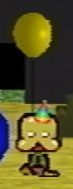
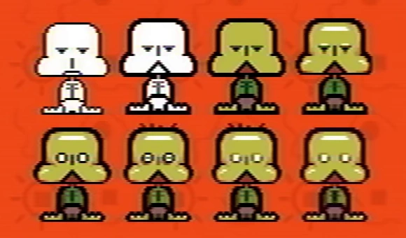

Guardian

{kind=link}
Fan recreation of sprite.
The guardian is the player character used in Petscop by the current player.
The guardian has yellow-green skin, white circular eyes, large cheeks, large feet, and no arms. It appears to be wearing a dark green shirt, brown pants, and no footwear. What appears to be its mouth is triangular and always open.
{kind=link}

Party hat
Objects such as keys that the player is carrying at the time are displayed hovering over the head of the guardian. In the house's living room during the house birthday event (shown in Petscop 14 and Petscop 17), it can be seen with a party hat and a yellow balloon.
Sprite variations
{kind=link}

{kind=link}
Guardian sprite development
The development of the guardian's sprite, along with its official name, was shown in the Extra Stuff menu during Petscop 18.
The 4th iteration is used when the player is pulled to the girl image on the second floor of the school. The 6th iteration is used in gens 1 and 2. Only the final sprite appears to have full animations.
Players
- Main article: Players
In Petscop, the current player is shown with the default guardian sprite. However, other players are shown with varied heads on the guardian sprite's body. These heads are always facing the same direction, while the body retains the directional animations.
Tiara is shown with a different (possibly unfinished) head sprite. Marvin has the body of the default character and a distorted green head. Paul, and possibly Care, seemingly appear with a red triangular head.
Theories
Appearance
The shirt that the guardian sprite appears to be wearing is possibly reflecting a straitjacket.
The red triangle mouth may have a relation to the red triangle head character that appears in Petscop 12.
Looking at the character from the side, it looks similar to a green-tinted skull.
Name
The name of "Guardian" possibly refers to the word "guardian" as defined as an assigned protector or caretaker of a child.
The red tool responds with "Newmaker" to the player asking "Who am I?", but this may refer to the current player or an intended player as a title of sorts, rather than the player character itself.
| People | Paul · Belle · Carrie · Marvin · Rainer · Anna · Mike · Lina · Jill · Daniel |
|---|---|
| Characters | Guardian · Amber · Pen · Randice · Roneth · Toneth · Wavey · Care · Tiara |